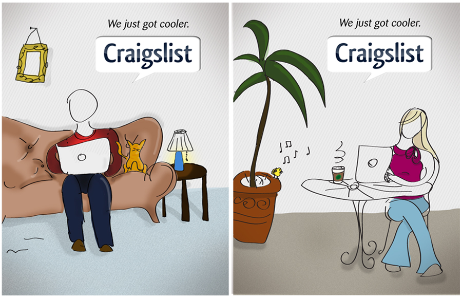

Craigslist Rebranding Campaign
For this academic assignment the objective was to create a friendly brand concept for the popular online community/ classifieds website Craigslist.com. Creating a more user friendly web site, and a unified campaign helped polish the companies current reputation while still upholding their "non-corporate" mission.
HTML, CSS, Javascript, After Effects, Logic Pro, Soundtrack Pro, Photoshop




Nooka Re-Branding Campaign
As an academic assignment, my job was to rebrand the New York based Fashion brand Nooka artist/designer Matthew Waldman. following a specific design brief, I incorporated many aspects of the brands ethos including, the blending of feminine and masculine, universal language, futurism and exclusivity.
Photoshop, Illustrator


Lost In Translation Movie Re-Branding Campaign
In this academic assignment, the objective was to rebrand a poster and supporting elements for the classic Soffia Coppala movie, Lost in Translation. My goal was to recreate the lonely and wistful mood of this movie and interpret it into the design.
After Effects, Logic Pro, Soundtrack Pro, Photoshop, Illustrator


Foreign Cinema Re-Branding Campaign
In this assignment I was challenged to rebrand the logo, menu and web design for the trendy upscale SF based restaurant Foreign Cinema. the objective was to create a design that better represented the hip and modern atmosphere of the restaurant as well as incorporating some of the organic vines and quasi-industrial architectural themes into the logo design.
After Effects, Logic Pro, Soundtrack Pro, Photoshop, Illustrator